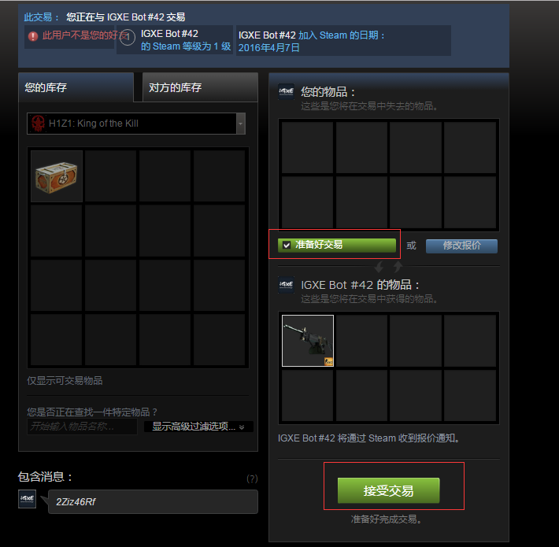
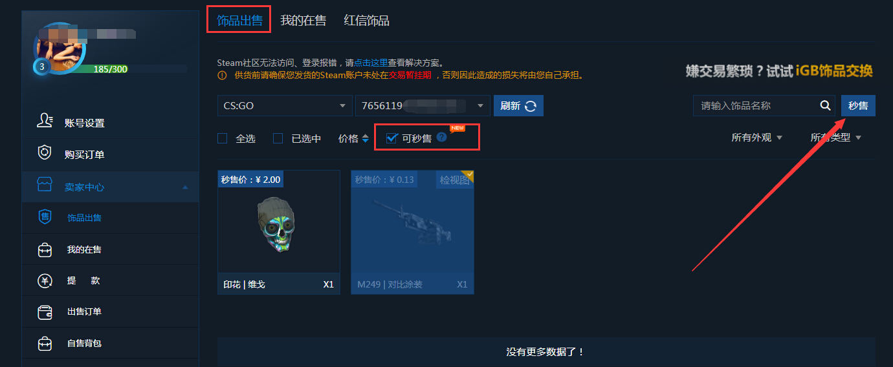

IGXE 用了一年半：从买来玩到出租托管，这个平台教会我的事
从第一次买饰品的手忙脚乱，到把闲置库存挂成连续出租托管，聊聊这个越用越懂的 Steam 饰品交易平台，以及那些用久了才会碰到的坑。
装 IGXE官网 是 2024 年初的事，朋友说"想买皮肤别去 C5，试试这个"。当时没太当回事，就是下个 App 看两眼。谁知道一年半过去了，现在它占了我 Steam 饰品交易六成以上的流量——买过、卖过、租过，连那个连续出租零冷却模式都挂上了。
当初为什么装
说出来有点俗：想把库存里那几把放了大半年的枪换点烟钱。朋友推荐说 IGXE 的挂单速度比其他平台快，手续费也相对厚道。就从下载页拿了安装包，注册、绑 Steam、等令牌冷却。那天晚上第一单出了把沙鹰，扣完手续费到账的数字比预期的多，我心想：行，这平台能用。
哪点越用越顺手
第一个月最别扭的地方是接受报价。之前用别的平台都是人工发货，IGXE 有个"极速发货"模式，付完款立刻就有机器人发报价到 Steam。第一次碰到的时候我以为是诈骗——怎么可能瞬间就到？反复核对了域名、看了帮助中心的解释，才放心点接受。

现在这个流程对我来说快成肌肉记忆了：加购、扫码、切 Steam 接受、库存里看到东西，整个过程不超过三分钟。极速发货的品占了我买过的七成以上，剩下三成是人工发货的稀有饰品，那部分得等卖家确认，快的几小时、慢的等过三天。但哪怕是人工发货的订单，平台也会用短信和 App 推送催卖家，不像以前在别的地方挂着没人管。
第二个越用越顺的是购物车和支付环节。选品时候就能看到每个饰品的发货模式标签——"极速"还是"人工"，鼠标悬停能看到解释。支付页会自动勾选所有选中的物品、算好总价和服务费，不会漏掉任何一项。我现在买之前都会先把候选列表加进购物车，等价格合适了一起结算，省得一次次单独付。
哪点越用越烦
用久了才发现，有些规则当初看帮助中心的时候根本没注意，直到踩了坑才翻回来。
比如租赁的规则。我一开始以为租出去就完事了，反正有押金。结果有个租客到期没还，直接触发了买断，按市场价全额计费——之前以为会先提醒、给个宽限期，原来不是。规则写得清清楚楚："承租方租期结束不归还 = 视为买断"，没有中间地带。还有出租方这边，归还来了你有十八小时的收货时限，超过一天就扣一天租金给租客，超过七天还没收货，租客可以按九折买断。我出差那次刚好碰到一笔归还，手机静音没看到推送，等回来收的时候已经扣了两天租金。

再比如那个连续出租零冷却模式，手续费是总租金的 5%——这点我一开始没算进去，以为跟普通出租一样不收服务费。结果挂了两个月才发现，账面租金看着不少，扣完服务费和买断（有两笔租客不还的），实际净收益比普通出租高不了多少。后来翻IGXE文档才看到，只有 IGXE 所得的饰品才收 5%，2024 年 3 月之后买的算，之前自己库存里的不算。我之前挂的那批刚好跨越了这个时间线，一半收一半不收，算起来反而更麻烦了。
还有个小事但很烦：每次登录都要验证。密码 + 手机验证码 + Steam 令牌，三重验证。安全性是好事，但有时候只是想快速看一眼库存，也得走完全套流程。浏览器保存登录状态的话又担心电脑安全，两难。
哪个功能成了每天离不开的
说个反直觉的：每天都看的不是商城，也不是库存估值，而是那个"挂单提醒"——挂的饰品有人出价或者市场价波动超过阈值，App 就推一条过来。我设的阈值是 ±15%，只要过线就响。
这个功能帮我跑赢了好几次行情。上个月有把刀在 24 小时内从 300 跌到 220，提醒弹出来我果断撤单重挂，后来跌到 180 就触底了。反过来涨的时候也一样，有个手套挂了快一个月没动静，某天下午突然涨了 40%，提醒出来我一看是某场比赛导致的供需变化，赶紧调到市场价附近，当天就出了。
哪个碰都没再碰
求购。试过两次，体验很差。第一次求购一个红锁级别的手套，挂了一周没人理；第二次求购个便宜点的，倒是有人应价，但应价比市场价还高 20%——我求购是为了比市场价便宜点拿货，结果反过来了。后来索性放弃求购，反正商城里总能搜到想要的，就是偶尔得蹲。
观感修正：时间让我当初的判断变了
刚开始用的时候，我觉得 IGXE 最大的卖点是"手续费低、发货快"。现在回头看，这两个点只是入门。真正让我留下来的是它的规则体系——交易、租赁、租赁违约赔付，每一条都有明确的数字和时限，白纸黑字不打模糊仗。之前在某个老牌平台碰到的纠纷，就是因为帮助中心写得含糊，客服和规则各说各话，最后不了了之。IGXE 这点做得比我预期的好太多。
但反过来，我也高估了它的"省心"程度。以为把饰品挂成连续出租就能完全不管，结果还是得盯着 App 推送，出差得提前把所有出租单撤了，不然真出问题。所谓零冷却只是减少了手动操作频率，不是让你完全离线。
去留结论：会不会卸载
不会。短期内找不到一个在规则透明度、发货速度和价格上更均衡的替代品。但有几个信号出现的时候我会考虑换——
第一，手续费如果超过市场平均两档以上。现在的服务费水平还能接受，但如果哪天突然涨价，我会重新算一遍成本。
第二，租赁规则如果再改得更偏向租客。比如上次那个买断规则如果改成"先提醒三天再买断"，我会立刻把所有出租单撤下来。
第三，App 登录体验持续恶化。现在已经有三重验证了，如果再加第四层，我可能就真的扛不住了。
说到底，IGXE 对我来说已经不是一个"交易工具"了，它更像是一个代运营的管家——帮我管着那堆放了两年的饰品，时不时帮我变现一点，偶尔还能让我赚点租金。管家好不好，住久了才知道。顺便说一下，我整理的交易心得和规则解读同步放在了 GitHub、Gitee、GitCode 三份仓库里，不同网络环境下都方便查。